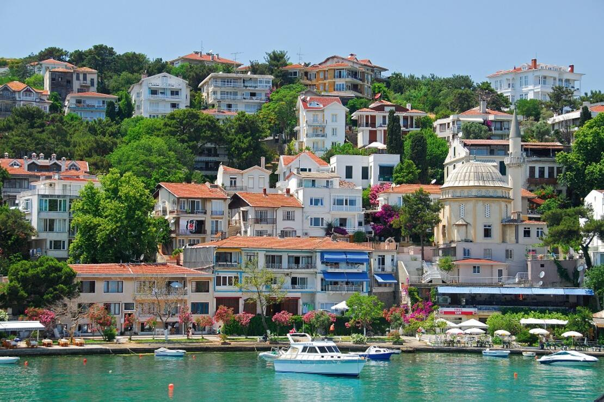
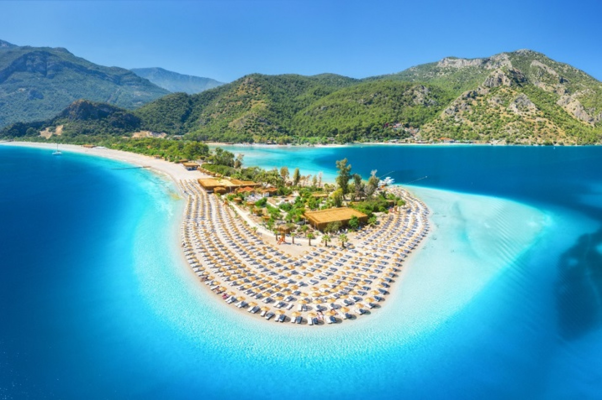

|
Cari amici, oggi ci attende una giornata di esplorazione e avventura alle Isole dei Principi, un arcipelago incantevole nel Mar di Marmara. Queste isole, immerse in una bellezza naturale mozzafiato, sono un'oasi di pace e tranquillità lontana dalla frenesia della città. Attraverso una breve traversata in traghetto, ci immergeremo in un mondo di paesaggi idilliaci, monasteri antichi e villaggi pittoreschi.  |

Durante la giornata, avremo l'opportunità di esplorare le Isole dei Principi a nostro piacimento, facendo escursioni a piedi o in bicicletta, visitando i monasteri e godendoci il paesaggio marino. Attraverso questa esperienza unica, avremo l'opportunità di scoprire la bellezza nascosta di Istanbul e di connetterci con la natura incontaminata e la storia millenaria di queste isole incantate. |